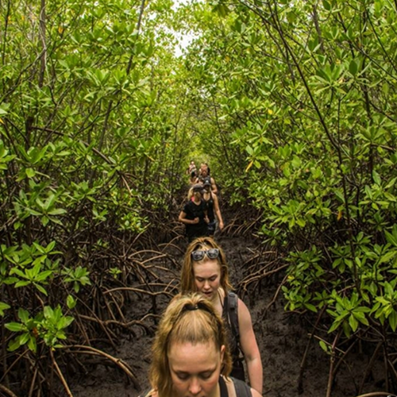
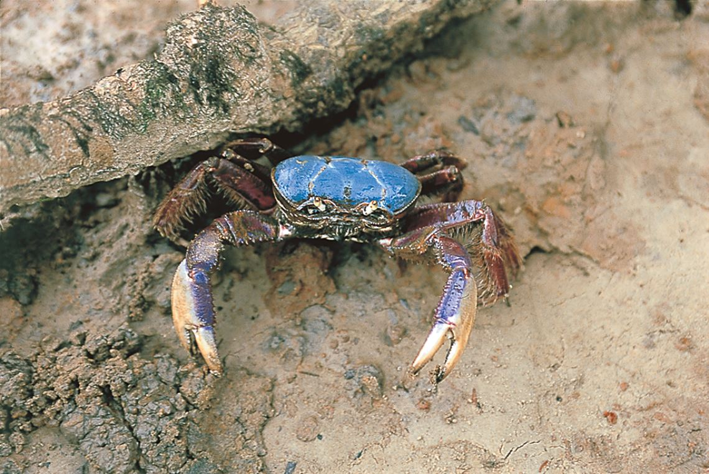
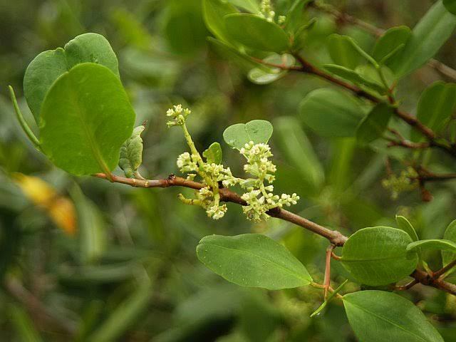
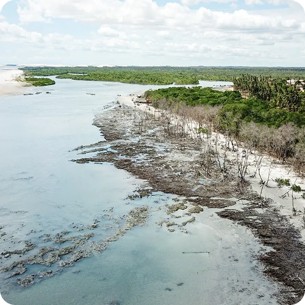
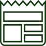
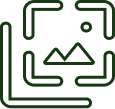

O começo de tudo
Conte aqui como surgiu o projeto Mangue Vivo e qual foi sua motivação inicial.

Educação ambiental e conservação dos manguezais. Juntos por um futuro mais sustentável!
Conheça o projetoO Mangue Vivo é um projeto de extensão da Universidade Federal do Ceará (UFC), Campus do Pici, dedicado à conservação dos manguezais e à promoção da educação ambiental em Fortaleza. Por meio de ações voltadas à comunidade, o projeto busca conscientizar a população sobre a importância desses ecossistemas para a biodiversidade, para a qualidade de vida e para o equilíbrio das regiões costeiras.
Além das atividades de pesquisa e extensão, o Mangue Vivo realiza campanhas educativas, mutirões de limpeza, palestras, oficinas e eventos que incentivam a participação da sociedade na preservação do meio ambiente. O projeto também produz materiais informativos e recursos didáticos que aproximam estudantes e visitantes da realidade dos manguezais, despertando o interesse pela ciência e pela sustentabilidade.



Conheça os momentos que construíram a trajetória do Mangue Vivo.
Conte aqui como surgiu o projeto Mangue Vivo e qual foi sua motivação inicial.
Descreva uma conquista ou atividade importante realizada nesta etapa.
Destaque o crescimento do projeto e suas ações de educação ambiental.
Conte como o projeto ampliou sua participação junto à comunidade.
Apresente a fase atual do Mangue Vivo e seus objetivos para o futuro.
Conheça a equipe por trás do Mangue Vivo!

Coordenadora

Vice-Coordenador

Servidora UFC

Educação Ambiental e Redes Sociais

Educação Ambiental

Redes Sociais e Jornal Digital

Educação Ambiental e Jornal Digital
Redes Sociais e Jornal Digital

Redes Sociais e Jornal Digital

Educação Ambiental

Integrante

Redes Socias e Jornal Digial
O Projeto Mangue Vivo tem como missão promover a conscientização ambiental e incentivar a preservação dos manguezais por meio da educação, da pesquisa e da extensão universitária. Buscamos aproximar a comunidade da importância desses ecossistemas, destacando seu papel na conservação da biodiversidade, na proteção do litoral e na manutenção da qualidade de vida.
Nossos objetivos incluem desenvolver ações educativas, realizar atividades de campo, incentivar práticas sustentáveis e apoiar pesquisas que contribuam para a conservação ambiental. Além disso, procuramos fortalecer o vínculo entre a Universidade Federal do Ceará e a sociedade, estimulando a participação da comunidade em iniciativas voltadas à proteção dos recursos naturais e à construção de um futuro mais sustentável.

Conheça algumas das ações desenvolvidas no nosso projeto!
Acesse as notícias do nosso jornal redigido pelos nosso integrantes!

Confira os últimos eventos do Mangue Vivo e se inscreva nos próximos.
Acesse os materiais educativos do Mangue Vivo e aprenda sobre a flora e a fauna.

Veja registros das atividades, eventos e ações desenvolvidas pela equipe do projeto.
Quer aprender de um jeito divertido e interativo? Descubra os jogos desenvolvidos pelo projeto!
Você pode entrar em contato com a equipe do projeto por meio do formulário de contato ou pelas nossas redes sociais para obter informações sobre como participar como voluntário.
Entre em contato com a equipe do projeto para consultar a disponibilidade de trilhas guiadas e receber orientações sobre a participação.
Acompanhe as novidades na página de conteúdos do nosso site e em nossas redes sociais. Por esses canais, divulgamos as próximas ações e eventos do projeto.
Sim! Entre em contato com a equipe do projeto para consultar a possibilidade de organizar uma visita para sua escola ou grupo.
Caso não tenha encontrado a resposta que desejava, entre em contato pelo formulário abaixo ou nos envie sua dúvida pelas nossas redes sociais para obter mais informações sobre voluntariado, trilhas, integrações e demais atividades do projeto.